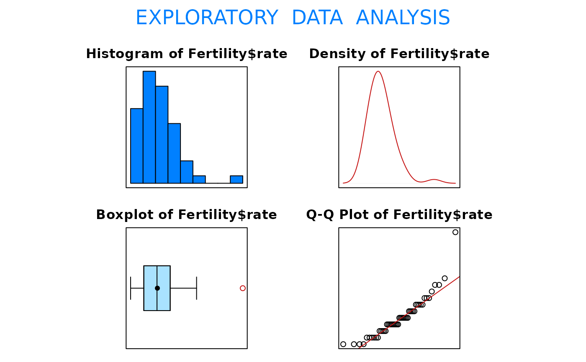

Data for Exercise 1.125
FertilityA data frame/tibble with 51 observations on two variables
a character variable with values Alabama,
Alaska, Arizona, Arkansas, California,
Colorado, Connecticut, Delaware, District of
Colunbia, Florida, Georgia, Hawaii, Idaho,
Illinois, Indiana, Iowa, Kansas, Kentucky,
Louisiana, Maine, Maryland,Massachusetts,
Michigan, Minnesota, Mississippi, Missour,
Montana, Nebraska, Nevada, New Hampshire, New
Jersey, New Mexico, New York, North Carolina, North
Dakota, Ohio, Oklahoma, Oregon, Pennsylvania,
Rhode Island, South Carolina, South Dakota,
Tennessee, Texas, Utah, Vermont, Virginia,
Washington, West Virginia, Wisconsin, and Wyoming
fertility rate (expected number of births during childbearing years)
Population Reference Bureau.
Kitchens, L. J. (2003) Basic Statistics and Data Analysis. Pacific Grove, CA: Brooks/Cole, a division of Thomson Learning.
stem(Fertility$rate)
#>
#> The decimal point is 1 digit(s) to the left of the |
#>
#> 14 | 0000
#> 16 | 00000000000
#> 18 | 000000000000000000
#> 20 | 0000000000
#> 22 | 0000
#> 24 | 000
#> 26 |
#> 28 |
#> 30 |
#> 32 | 0
#>
fivenum(Fertility$rate)
#> [1] 1.50 1.70 1.90 2.05 3.20
EDA(Fertility$rate)
#> [1] "Fertility$rate"

#> Size (n) Missing Minimum 1st Qu Mean Median TrMean 3rd Qu
#> 51.000 0.000 1.500 1.700 1.906 1.900 1.883 2.100
#> Max. Stdev. Var. SE Mean I.Q.R. Range Kurtosis Skewness
#> 3.200 0.307 0.094 0.043 0.400 1.700 4.240 1.562
#> SW p-val
#> 0.000